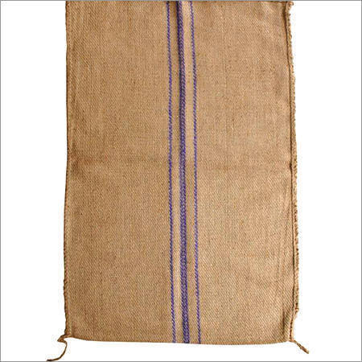
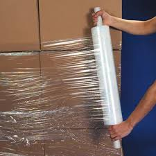
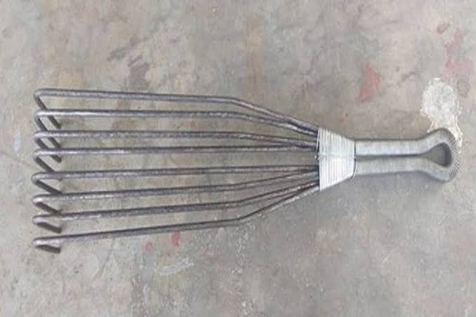

Friction is the force that opposes the motion of an object when it comes into contact with another object or surface. Its main point is that it acts in the opposite direction of the applied force and can vary depending on the nature of the materials in contact, the smoothness of their surfaces, and the amount of force applied. Friction can be both beneficial and detrimental, as it can help us walk, drive, and grip objects, but it can also cause wear and tear on machinery and generate heat, which can lead to energy loss and inefficiency. To reduce friction, various methods can be employed, such as using lubricants, reducing surface roughness, or employing bearings and rollers.
Dragging involves pulling an object along a surface by applying force in the direction of motion. It typically requires less force than lifting an object and is useful for moving heavy objects over short distances.
According to our convinent the bag should be manufacture as to drag
  